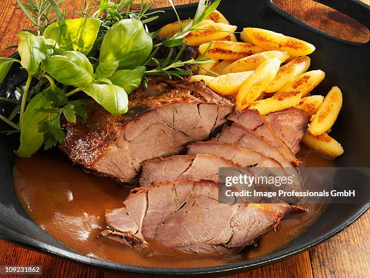

A carne de javali lembra a parte magra do porco doméstico, mas é escura como a bovina, sem estrias gordurosas e com sabor marcante. É mais consistente em sua textura e encolhe muito pouco ao ser cozida. Como regra geral, o javali pode ser feito como a carne do porco. Dependendo da idade e da espessura da peça, deve ser preparado em molho marinado antes de ir ao fogo. As marinadas tornam a carne mais macia e enriquecem o sabor selvagem e são preparadas para serem cozidas na caçarola, ao forno ou sobre brasas. Peças congeladas devem ser descongeladas, assim como as resfriadas devem alcançar a temperatura adequada e descansar em molho marinado.